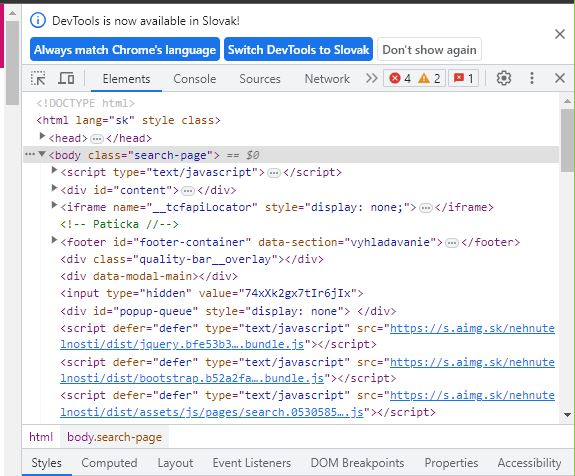

Ako použiť voľne dostupné dáta pre vlastnú analýzu
Upozornenie
Predtým než sa dostanem k téme tohto blogu, upozorňujem, že tento článok slúži výhradne k informačným účelom a akékoľvek informácie uvedené nižšie nie sú právne rady. Z tohto dôvodu pred akýmkoľvek zbieraním údajov z webu by ste mali získať vhodnú profesionálnu právnu radu týkajúcu sa vášho konkrétneho prípadu.
Web scraping
V tomto blogovom príspevku prejdem procesom web scraping-u s využitím programovacieho jazyka R. Predtým než sa pustím do samotného procesu, chcel by som sa trochu venovať téme z trochu širšej prespektívny. Web scraping je proces získavania obsahu alebo (väčšinou) štruktúrovaných údajov z webových stránok automatizovaným spôsobom (a obvykle vo veľkom množstve). Táto definícia prirodzene vyvoláva otázku o legalite takéhoto procesu. V zásade web scraping nie je ilegálny alebo zakázaný sám osebe (v EÚ, k júnu 2024). Avšak, používanie nástrojov na sťahovanie údajov je z právneho hľadiska riskantné z niekoľkých dôvodov:
Porušenie duševného vlastníctva
Porušenie zmluvy
Obavy o ochranu osobných údajov
Pre zminimalizovanie obáv by malo scrapovanie prebiehať diskrétne, rešpektovať podmienky používania webových stránok, v rámci procesu by ste mali kontrolovať, či stránky používajú protokol robots.txt na oznámenie, že scrapovanie je zakázané, vyhnúť sa scrapovaniu osobných údajov a, ak je to nevyhnutné, uistiť sa, že nedochádza k porušeniu GDPR, taktiež sa vyhnúť scrapovaniu súkromných alebo utajovaných informácií (Zdroj). Existujú niektoré všeobecné etické zásady, ktoré by ste mali dodržiavať, keď chcete scrapovať údaje z webu. Najčastejšie spomínané sú:
Ak existuje verejné API, ktoré poskytuje požadované údaje, použite ho namiesto scrapovania.
Sťahujte údaje v rozumnom tempe, aby scrapovanie nebolo škodlivé pre server a nemohlo byť zamieňané za DDoS útok.
Rešpektujte duševné vlastníctvo iných. Použite údaje na vytvorenie nového hodnotného obsahu, nie na duplikovanie a predávanie ich ako vlastné alebo nelegálne predávanie.
Nepoužívajte scrapovanie osobných alebo súkromných údajov alebo dokumentov, rešpektujte GDPR.
Skontrolujte súbor robots.txt, aby ste zistili, ako by mal byť web prehľadávaný.
Zdieľajte to, čo môžete. Ak sú údaje, ktoré ste scrapovali, verejne dostupné, alebo ste získali povolenie na ich zdieľanie, zverejnite ich pre iných (napríklad na GitHub alebo Kaggle). Ak ste napísali webový scraper na prístup k nim, zdieľajte jeho kód.
Hľadajte spôsoby, ako vrátiť hodnotu webovým stránkam, ktoré scrapujete, napríklad odkazovaním na stránku v článku alebo príspevku, aby ste na ňu priviedli návštevníkov.
Ak sa jedná o súkromný projekt (ako tento), počkajte kým sa štruktúra stránky zmení a kód nie je možné použiť bez ďalšej úpravy.
Niekoľko článkov venujúcim sa téme môžete nájsť na towardsdatascience.com, Data Fluency github page alebo scrapingrobot page. Príklad komerčného využitia web scrapingu je napr. Apify, ktoré ponúka množstvo produktov a riešení v oblasti web scrapingu. V tomto článku budem scrapovať údaje zo stránky Nehnutelnosti, ktorá sa špecializuje na realitné inzeráty a služby. Pre dodržanie etických zásad scrapovania som prijal niekoľko preventívnych opatrení:
Táto konkrétna stránka používa protokol robots.txt. Nescrapujem žiadnu časť, ktorá je zakázaná a vo vybraných častiach kódu som pridal funkciu Sys.sleep(), aby som spomalil proces a žiadal údaje s primeranou frekvenciou.
Scrapujem len verejné údaje, ktoré potrebujem na ďaľšiu analýzu a vytvorenie ML modelu.
Ako obvykle, začínam s načítaním balíkov potrebných pre tento projekt. Používam na to packman knižnicu a funkciu p_load(), ktorá ma dve výhody oproti základnej funkcii library():
ak potrebnú knižnicu nemám nainštalovanú, funkcia to rovno napraví
môžem načítať viacero knižníc naraz
Knižnice
if (!require("pacman")) {install.packages("pacman")}pacman::p_load( tidyverse, rvest, # scraping, part of tidyverse httr, # working with html RSelenium, # scraping in Google Chrome netstat, # free_port() doParallel, # parallel processing furrr # future map)
V tomto projekte máme tri skupiny balíkov:
na načítanie údajov a manipuláciu s nimi - rio, tidyverse
na web scrapovanie - rvest, RSelenium, netstat, httr. Poznámka: V čase uverejnenia tohto príspevku bola dostupná už aj nová funkcia v knižnici rvest read_html_live(). Podľa popisu by mohla aspon čiastočne nahradiť RSelenium.
na paralelné spracovanie - doParallel a furrr
Webové elementy
Bez ohľadu na to, ktorý programovací jazyk alebo balík si vyberiete na scrapovanie, musíte byť schopní nájsť elementy v zdrojovom kóde webovej stránky. To môžete jednoducho urobiť vo vašom webovom prehliadači (pre potreby tohto blogu používam Google Chrome). Stlačte CRTL + SHIFT + I na otvorenie nástrojov vývojára. Teraz, keď sa pohybujete kurzorom po kóde v okne, dynamicky vám ukáže, ktorá časť stránky je s ňou spojená. Jednoduchším spôsobom, ako získať správnu referenciu na element (alebo inú časť stránky), je stlačiť CRTL + SHIFT + C a vybrať priamo na stránke požadovaný element.

DevTools v Google Chrome
Ak ste našli správny element, musíte skopírovať jeho CSS selektor alebo cestu XPath. Obe možnosti môžu byť použité ako argumenty v rvest a RSelenium.
Kopírovanie XPath web elementu
Teraz ste pripravení získať obsah zo stránky. Výsledok, ak ste všetko správne urobili, môže mať rôzne formy. Môže to byť jedna hodnota, reťazec, zoznam atď. Na základe toho buď presnejšie špecifikujete, ktorú časť obsahu potrebujete, alebo pracujete s výsledkom v R a používate funkcie na manipuláciu s dátami s cieľom získania požadovaných informácií.
Scraping časť I. - rvest
Jedným z najbežnejších balíkov na web scrapovanie v R je rvest. Poskytuje funkcie na prístup k verejnej webovej stránke a na vyhľadávanie špecifických prvkov pomocou selektorov CSS a XPath. Tento balík nespúšťa javascript, čo znamená, že načíta html stránky rýchlejšie, ale vynechá všetky prvky načítané javascriptom po pôvodnom načítaní stránky. Preto je tento balík dobrá voľba, ak scrapujete statické stránky.
V tomto príklade začínam vytvorením premennej pre zdrojovú URL adresu: https://www.nehnutelnosti.sk/slovensko/byty/predaj/?p[param1][from]=1000&p[param1][to]=&p[page]=
Následne skontrolujem počet stránok:
Number of pages with search results
A nakoniec pripravím a spustím multisession na získanie ceny, adresy, typu nehnuteľnosti a najdôležitejšie - odkazu na inzerát, ktorý bude použitý v ďalšej časti s balíkom RSelenium. Pridal som aj plan(sequential) na zastavenie multisession, ale musím priznať, že nie som tak znalý paralelného programovania v R, aby som úplne pochopil dôležitosť tohto kroku.
RSelenium poskytuje súbor R väzieb pre Selenium 2.0 WebDriver. Na rozdiel od rvest spúšťa skutočný webový prehliadač, takže načíta akýkoľvek javascript obsiahnutý na webovej stránke. S týmto balíkom budete schopní interagovať so stránkou, napríklad posúvať, klikať na tlačidlo, vyplňovať vstupné formuláre atď. Na druhej strane je použitie tohto balíka náročnejšie, vyžaduje inštalovaný jazyk Java vo vašom systéme, a ja som sa stretol s viacerými problémami, kým som ho správne spustil. Viac sa tejto téme budem venovať v jednom z budúcich blogov. Začínam definovaním niekoľkých pomocných funkcií. Jedna je na neúspešnú navigáciu na stránku, k čomu obvykle dochádzalo, keď som čítal príliš veľa stránok a musel som vymazať históriu prehliadania. Niekedy táto funkcia spôsobila nekonečnú slučku, ktorá bežala niekoľko hodín, než som si to všimol (napríklad počas noci), ale aspoň kód nezhavaroval. Tiež som skúsil vytvoriť funkciu na vymazanie histórie v prípade neúspešnej navigácie, ale nefungovala, a som spokojný s týmto súčasným riešením. Druhá je na spracovanie chyby pri hľadaní elementu. V takýchto prípadoch táto funkcia vráti NA. Posledná je podobná predchádzajúcej, ale v tomto prípade vráti NA, ak sa element nenájde. V skripte tiež používam funkciu tryCatch() na vrátenie NA v prípade chyby.
Definovanie funkcií
# Define a function that handles the errors in page load# Delete all cookies from the last 24 hoursclearCookies <-function(remDr) { remDr$deleteAllCookies()}navigate_with_retry <-function(link, remDr) { success <-FALSEwhile (!success) {tryCatch( { remDr$navigate(link)Sys.sleep(5) success <-TRUE },error =function(e) {cat("Failed to navigate to", link, "- Retrying in 10 seconds...\n")clearCookies(remDr)Sys.sleep(10) } ) }}# Define a wrapper function that handles the errors in element searchsafe_find_element <-possibly(function(page, xpath) { page$findElement(using ="xpath", xpath)}, NA)# function to get text or return NA if element not foundget_text_or_na <-function(nodes) {tryCatch( { text <- nodes %>%html_text2() %>%as.character() # %>%# str_trim() %>%# str_squish()if (text =="") NAelse text },error =function(e) {NA } )}
Teraz rozdeľujem odkazy na inzeráty do 10 setov. Tento krok nie je nutný, pretože kód funguje, ale robím to v prípade neočakávanej chyby počas procesu scrapovania, aby som zachránil aspoň časť údajov. Tento krok som zaradil až po jednej veľmi zlej skúsenosti. Ďalšia časť scrapovania totiž trvá viac ako dva dni a môžete mi veriť, že nechcete stratiť celý pokrok kvôli výpadku WiFi. Taktiež vytváram prázdny dataframe so všetkými možnými stĺpcami, ktorý sa bude napĺňať dátami.
Rozdelenie dát do menších celkov
# Additional info from web# number of splitsnum_splits <-10split_size <-ceiling(nrow(advertisements) / num_splits)# split the data frame into subsetsadvertisments_list <-split(advertisements, rep(1:num_splits, each = split_size, length.out =nrow(advertisements)))for (i inseq_along(advertisments_list)) {assign(paste0("advertisements_", i), advertisments_list[[i]])}# create empty dataframe outside of the loop to hold additional infoadditional_info_df <-tibble(link =character(),info_text =character(),additional_characteristics =character(),index_of_living =character(),environment =character(),quality_of_living =character(),safety =character(),transport =character(),services =character(),relax =character(),info_details =character(),stringsAsFactors =FALSE)
Až teraz prichádzam k samotnému scrapovaniu s použitím RSelenium. Používam len samotnú knižnicu RSelenium, existuje tiež možnosť použiť Docker na spustenie servera Selenium a pripojenie sa k tejto inštancii pomocou RSelenium, túto možnosť som však nepoužil. Ako už bolo spomenuté, na jeho spustenie musím dodržať niekoľko krokov. Na nastavenie servera Selenium a prehliadača musíte použiť funkciu rsDriver() a volať $client na vytvorenie klienta. Funkcia rsDriver očakáva niekoľko argumentov:
browser - používam Chrome, takže argument je “chrome”,
chromever - tento argument je často zdroj chýb. Jeho riešenie popíšem v samostatnom BLOGU, ale v tomto prípade píšem verziu “119.0.6045.105”,
verbose - nastavujem FALSE,
port - port, na ktorom sa má spúšťať. Používam funkciu z balíka netstatfree_port(random = TRUE) pre automatický výber voľného portu.
Následne skriptom otvorím prehliadač, maximalizujem okno, prejdem na stránku Nehnuteľnosti a prijmem súbory cookie. Potom je nutné manuálne prihlásenie, aby sa zobrazili hodnoty jednotlivých komponentov “indexu bývania”. Tento krok by sa dal zautomatizovať, avšak je to jednorazová aktivita, takže ju ponechávam takto. Keď je toto všetko hotové, skutočné scrapovanie prebieha v cykle. Nejdem do všetkých detailov, ale logika je dosť jednoduchá, skript:
Prejde na odkaz v cykle.
Posunie sa na (výšku stránky/10*4,2), aby sa spustil javascript na zobrazenie indexu bývania (táto hĺbka posuvu je založená na manuálnych testoch, napriek tomu musím nájsť inú metódu alebo spustiť viacero posunov, aby sa script skutočne spustil na všetkých načítaných stránkach).
Počká 3 sekundy na vykonanie javascriptu a spomalenie procesu (aby sa zbytočne nezaťažovala stránka).
Načíta obsah stránky.
Ak sa stránka nedá načítať, pridá prázdny záznam do dataframe-u.
Ak sa stránka dá načítať, prejde html stránky, scrapuje nasledujúce informácie a pridá nové riadky k dataframe-u:
info_text - celý text z inzerátu. Momentálne nie je používaný v ML modeli, ale plánujem použiť NLP na získanie kľúčových slov/tém a vytvorenie wordcloud v Shiny appke.
info_details - obsahuje 4 premenné a bude vyčistený v nasledujúcich krokoch. Premenné sú oddelené symbolom “”.
index_of_living - hodnota od 0 do 10, vypočítava ju slovenský startup City Performer. Zohľadňuje šesť kategórií: prostredie, kvalita bývania, bezpečnosť, doprava, služby a oddych.
additional_characteristics - obsahuje viacero premenných, v nasledujúcich krokoch vyberiem 12 z nich. Premenné sú oddelené symbolom "\n".
Zatvorí klienta a zastaví server.
Scraping pomocou RSelenium
for (i in1:10) {# get the current dataframe current_df <-get(paste0("advertisements_", i))# start the server rs_driver_object <-rsDriver(browser ="chrome",chromever ="119.0.6045.105",verbose =FALSE,port =free_port(random =TRUE) )# create a client object remDr <- rs_driver_object$client# open a browser remDr$open() remDr$maxWindowSize()# navigate to a website remDr$navigate("https://www.nehnutelnosti.sk/")Sys.sleep(5) # wait for 5 seconds# accept cookies# switch to cookie iframeremDr$switchToFrame(remDr$findElement(using ="xpath", '//*[@id="sp_message_iframe_920334"]'))remDr$findElement(using ="xpath", '//*[@id="notice"]/div[2]/button')$clickElement()# switch back to default frameremDr$switchToFrame(NA)# MANUAL LOG IN# loop through each link in the current dataframefor (link in current_df$link) { info_text <-NA additional_characteristics <-NA index_of_living <-NA environment <-NA quality_of_living <-NA safety <-NA transport <-NA services <-NA relax <-NA info_details <-NAnavigate_with_retry(link, remDr)#remDr$executeScript("document.body.style.zoom = '50%';") height <-as.numeric(remDr$executeScript("return document.documentElement.scrollHeight"))/10*4.2# Scroll to load index of living remDr$executeScript(paste("window.scrollTo(0, ", height, ");")) # scroll to living indexSys.sleep(1) page <-safe_find_element(remDr, '//*[@id="map-filter-container"]')if (is.na(page)) { new_row <-tibble(link = link,info_text =NA,additional_characteristics =NA,index_of_living =NA,environment =NA,quality_of_living =NA,safety =NA,transport =NA,services =NA,relax =NA,info_details =NA )# bind new row to additional info dataframe additional_info_df <-rbind(additional_info_df, new_row) } else { page_html <- page$getElementAttribute("outerHTML") page_html <-read_html(page_html[[1]]) info_text <- page_html %>%html_nodes(xpath ='//*[contains(concat( " ", @class, " " ), concat( " ", "text-inner", " " ))]') %>%get_text_or_na() info_details <- page_html %>%html_nodes(xpath ='//*[@id="map-filter-container"]/div[2]/div/div[1]/div[2]/div[5]/ul') %>%html_text2()tryCatch( { index_of_living <- page_html %>%html_nodes(xpath ='//*[@id="totalCityperformerWrapper"]/div/p[1]/span') %>%get_text_or_na() },error =function(e) { index_of_living <-NA } )tryCatch( { environment <- page_html %>%html_nodes(xpath ='//*[@id="map-filter-container"]/div[2]/div/div[1]/div[4]/div[1]/div[1]/div/div[2]/div[2]/div[1]/div[1]/div[2]/span[1]/span') %>%get_text_or_na() },error =function(e) { environment <-NA } )tryCatch( { quality_of_living <- page_html %>%html_nodes(xpath ='//*[@id="map-filter-container"]/div[2]/div/div[1]/div[4]/div[1]/div[1]/div/div[2]/div[2]/div[1]/div[2]/div[2]/span[1]/span') %>%get_text_or_na() },error =function(e) { quality_of_living <-NA } )tryCatch( { safety <- page_html %>%html_nodes(xpath ='//*[@id="map-filter-container"]/div[2]/div/div[1]/div[4]/div[1]/div[1]/div/div[2]/div[2]/div[1]/div[3]/div[2]/span[1]/span') %>%get_text_or_na() },error =function(e) { safety <-NA } )tryCatch( { transport <- page_html %>%html_nodes(xpath ='//*[@id="map-filter-container"]/div[2]/div/div[1]/div[4]/div[1]/div[1]/div/div[2]/div[2]/div[2]/div[1]/div[2]/span[1]/span') %>%get_text_or_na() },error =function(e) { transport <-NA } )tryCatch( { services <- page_html %>%html_nodes(xpath ='//*[@id="map-filter-container"]/div[2]/div/div[1]/div[4]/div[1]/div[1]/div/div[2]/div[2]/div[2]/div[2]/div[2]/span[1]/span') %>%get_text_or_na() },error =function(e) { services <-NA } )tryCatch( { relax <- page_html %>%html_nodes(xpath ='//*[@id="map-filter-container"]/div[2]/div/div[1]/div[4]/div[1]/div[1]/div/div[2]/div[2]/div[2]/div[3]/div[2]/span[1]/span') %>%get_text_or_na() },error =function(e) { relax <-NA } )tryCatch( { additional_characteristics <- page_html %>%html_nodes(xpath ='//*[@id="additional-features-modal-button"]/ul') %>%html_text2() # %>%# str_squish() },error =function(e) { additional_characteristics <-NA } ) new_row <-tibble(link = link, info_text = info_text,additional_characteristics = additional_characteristics,index_of_living = index_of_living,environment = environment,quality_of_living = quality_of_living,safety = safety,transport = transport,services = services,relax = relax,info_details = info_details )# bind new row to additional info dataframe additional_info_df <-rbind(additional_info_df, new_row) } }}# close remote driverrs_driver_object$client$close()rs_driver_object$server$stop()rm(rs_driver_object, remDr)gc()
Data wrangling
Scrapovanie je hotové a pokračujem s manipuláciou s dátami, aby som ich dal do (prvotnej) použiteľnej formy. Najprv upravujem adresu, aby som všetky okresy dostal do prvého stĺpca. Táto adresa sa neskôr používa na geokódovanie, ktoré opisujem v nasledujúcom blogu. Cena je taktiež upravená na číslo, aby sa mohla použiť v ML modeli.
Teraz potrebujem rozdeliť hodnoty stĺpcov additional_characteristics a info_details na viac zmysluplných premenných. Preto som vytvoril dva zoznamy: characteristics1 a characteristics2. Každý z nich obsahuje názov premenných, ktoré chcem extrahovať. Používam tieto zoznamy na vytvorenie prázdneho dataframe-u, aby som sa uistil, že sú všetky stĺpce prítomné. Z additional_info_df vyberiem additional_characteristics a info_details a rozdelím hodnoty pomocou "\n" ako oddeľovača. Ďalej definujem dve funkcie: get_characteristics1 a get_characteristics2, ktoré tieto hodnoty mapujú na príslušné stĺpce. Nakoniec spájam output_df_characteristics1, output_df_characteristics2, vybrané stĺpce z additional_info_df a pripájam ich k advertisements_cleaned podľa linku inzerátu.
Úprava dát 2
# get additional information from scraped data# First list of additional info detailscharacteristics1 <-c("Stav", # condition"Úžit. plocha", # land area"Energie", # energy costs"Provízia zahrnutá v cene")characteristics1_df <-data.frame(characteristics1, value =NA)# Second list of additional info detailscharacteristics2 <-c("Počet izieb/miestností", # number of rooms"Orientácia", # orientation"Rok výstavby", # built year"Rok poslednej rekonštrukcie", # year of last reconstruction"Energetický certifikát", # energy certificate"Počet nadzemných podlaží", # number of floors"Podlažie", # floor"Výťah", # lift"Typ konštrukcie", # construction type"Počet balkónov", # number of balconies"Počet lodžií", # number of loggias"Pivnica"# cellar)characteristics2_df <-data.frame(characteristics2, value =NA)characteristics_wrangler <- additional_info_df %>%mutate(chars1_list =str_split(info_details, "\n"),chars2_list =str_split(additional_characteristics, "\n") ) %>%select(-additional_characteristics, -info_details)get_characteristics1 <-function(x) { temp_df <- x %>%unlist() %>%as.data.frame() temp_df <-rename(temp_df, chars = .) temp_df <- temp_df %>%separate_wider_delim(chars,delim =": ",names =c("info","status" ) ) %>%filter(info %in% characteristics1) %>%full_join(characteristics1_df, join_by("info"=="characteristics1"), keep =FALSE) %>%select(-value) %>%pivot_wider(names_from = info, values_from = status)return(temp_df)}get_characteristics2 <-function(x) { temp_df <- x %>%unlist() %>%as.data.frame() temp_df <-rename(temp_df, chars = .) temp_df <- temp_df %>%separate_wider_delim(chars,delim =": ",names =c("info","status" ) ) %>%filter(info %in% characteristics2) %>%full_join(characteristics2_df, join_by("info"=="characteristics2"), keep =FALSE) %>%select(-value) %>%pivot_wider(names_from = info, values_from = status)return(temp_df)}# Apply get_characteristics1() and get_characteristics2() to each row in additional_info_df and combine the resultsoutput_df_characteristics1 <-map_dfr(characteristics_wrangler$chars1_list, get_characteristics1)output_df_characteristics2 <-map_dfr(characteristics_wrangler$chars2_list, get_characteristics2)# Add the new columns to additional_info_dfadditional_info_df_complete <-cbind( additional_info_df %>%mutate(index_of_living =str_replace_all(index_of_living, " /", "")) %>%select(c(link, info_text, index_of_living, environment, quality_of_living, safety, transport, services, relax)) %>%mutate(flag ="x"), output_df_characteristics1, output_df_characteristics2)advertisements_complete <- advertisements_cleaned %>%left_join(additional_info_df_complete, by ="link", multiple ="first") %>%filter(!is.na(flag)) %>%select(-flag, -c, -type)
Posledný krok je uloženie dát vo formáte RDS.
Uloženie súborov
saveRDS(additional_info_df, "data/additional_info_df.RDS")saveRDS(advertisements, "data/advertisements.RDS")# create separate df for text analysestext_long <- advertisements_complete$info_textsaveRDS(text_long, file ="data/text_long.rds")saveRDS(advertisements_complete, file ="data/advertisements_complete.rds")